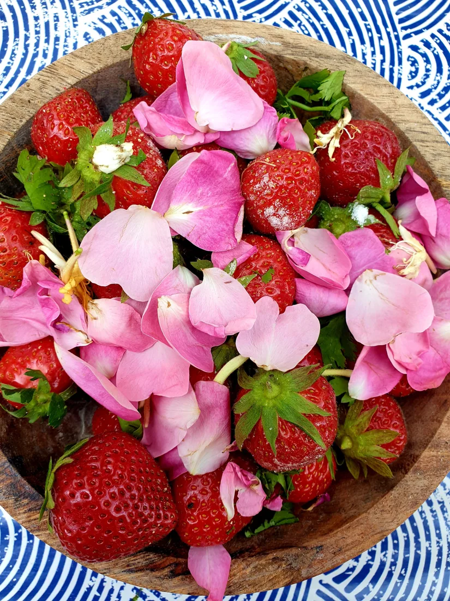
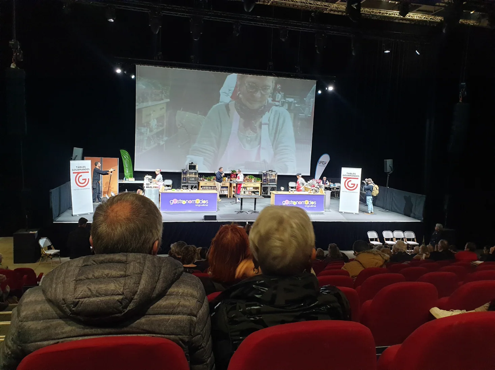
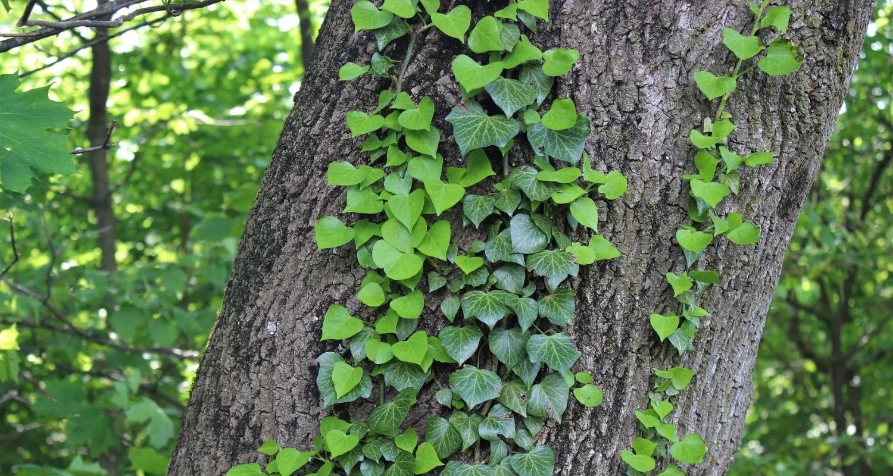
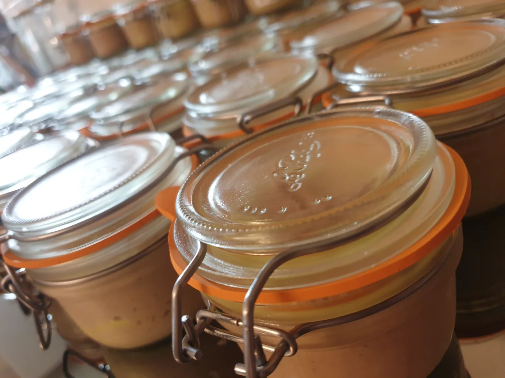
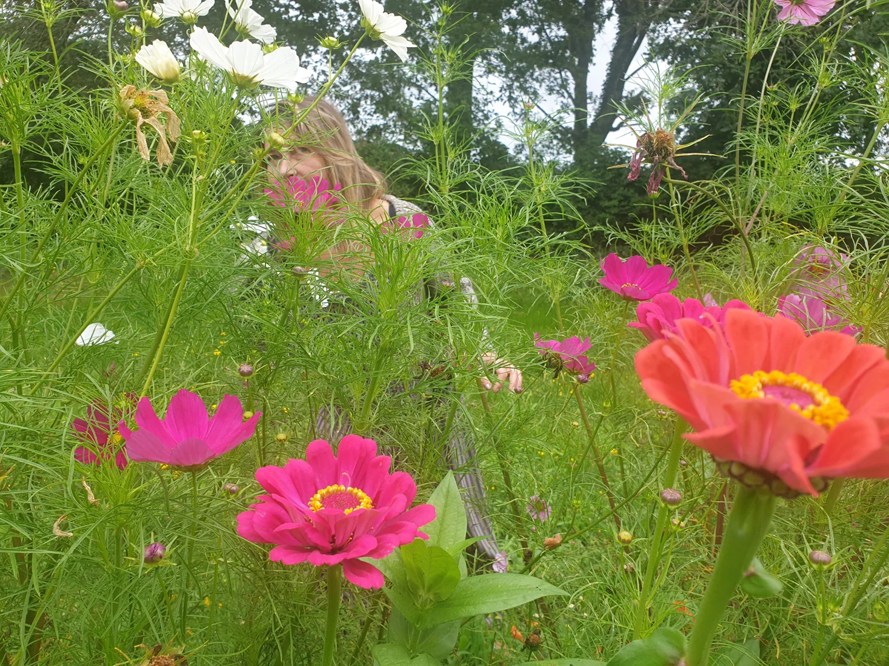
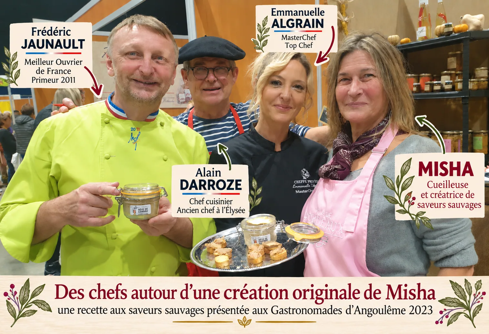

Une lessive née de la forêt
Le lierre, une plante généreuse à découvrir autrement.
Découvrir l’astuce du jour →Dans les bois, au détour d'un sentier, au fil des saisons… Misha révèle les trésors des plantes sauvages, entre gourmandise, savoir-faire et émerveillement.
Entrer dans son univers
Photo : Sylvain Le SauceLe lierre, une plante généreuse à découvrir autrement.
Découvrir l’astuce du jour →Plantes du mois, astuces et invitations au fil des saisons.
Recevoir les nouvelles →
Une cuisine vivante Découvrir son histoire →
Plantes sauvages Explorer la nature →
Le Rêve de canard Découvrir la spécialité →
Ateliers & cueillette Partager et apprendre →Des racines culinaires, des rencontres et une curiosité toujours en éveil.
Magali, que l'on appelle Misha, a grandi au contact d'une cuisine généreuse et des traditions du Sud-Ouest. Après un parcours consacré à l'accompagnement et à la gestion d'équipes, elle a choisi de suivre un autre fil : celui de la nature, de la cuisine et du partage.
Aujourd'hui, elle cueille, transforme et cuisine les plantes sauvages, mêlant recettes familiales, découvertes et créativité. Chaque saison devient une occasion d'apprendre, de goûter et de transmettre.
« La nature est pleine de merveilles pour qui prend le temps de les regarder. »
Apprendre à reconnaître, cueillir avec respect, puis imaginer mille façons de les utiliser.
Il habille les troncs, contribue à protéger l'arbre et offre abri et nourriture à de nombreux habitants de la forêt. Ses fleurs tardives nourrissent les pollinisateurs ; ses baies sont appréciées des oiseaux.
Et ses feuilles contiennent des saponines : voilà une jolie piste pour préparer une lessive maison !
Découvrir le conseil de Misha →Une recette simple inspirée des ateliers de Misha.
La forêt nous souffle parfois des idées très simples.
Cueillir avec douceur,
transformer avec soin.
Il vous faut : environ 50 feuilles de lierre grimpant et de l'eau pour les recouvrir.
Utilisation : un petit verre de préparation par lessive. Pour le linge blanc, ajouter une cuillère à café de bicarbonate de soude dans le tambour.
Conservation : jusqu'à 10 jours au frais. Préparer de petites quantités.
Réservez cette préparation au lavage du linge ; ne l'avalez pas et gardez-la hors de portée des enfants et des animaux. Identifiez la plante avec certitude avant toute cueillette. Les résultats varient selon le linge et la machine.
Et le lierre a encore d'autres utilisations à découvrir au fil des ateliers…
Les saveurs et créations artisanales au fil des saisons.
Traiteur, cuisine à domicile, créations artisanales : des saveurs qui surprennent et rassemblent.
Misha imagine des menus adaptés aux envies, aux saisons et aux occasions : repas privés, événements, ateliers cuisine, découvertes gourmandes.
Sa cuisine fait dialoguer les traditions du Sud-Ouest, les plantes sauvages et des idées d'aujourd'hui.
Parler d'un projet →
Un bloc végétal gourmand, imaginé pour surprendre les papilles et ouvrir de nouveaux horizons.
Ce qu'ils en disent →« C'est très étonnant d'équilibres ! Je ne délaisserai jamais le foie gras de qualité mais cette préparation est superbe. »Alain Darroze · ancien chef cuisinier à l'Élysée
« Un produit gourmand exceptionnel en bouche, avec que du végétal ! Merci pour cette belle découverte. »Emmanuelle Algrain · MasterChef, Top Chef
« Bluffant ! »Joël Cabane · éleveur de canards à Mugron
Partir à la rencontre des plantes, apprendre les bons gestes, puis les transformer ensemble : en cuisine, dans les préparations du quotidien ou au gré de vos envies.
Des moments accessibles aux curieux, aux débutants et aux passionnés, dans le respect du vivant.
Demander les prochaines dates →Les astuces, la plante du mois, les ateliers et les nouvelles de Misha, sans vous envahir.
Pour le moment, ce bouton ouvre votre messagerie. Un véritable formulaire d'inscription sera ajouté avec la solution de gestion du site.